Q1. Vous êtes :
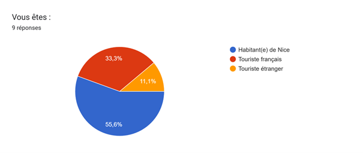
Q2. Votre situation principale :
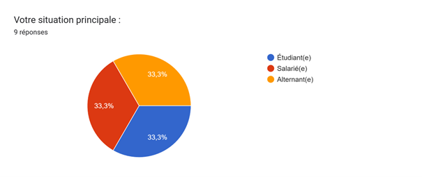
Q3. À quelle fréquence utilisez-vous les transports à Nice ?
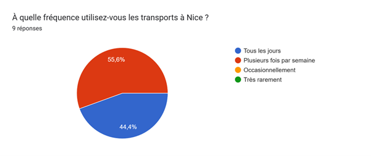
B2. Votre déplacement principal concerne :
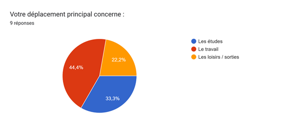
B3. Vous utilisez le plus souvent :
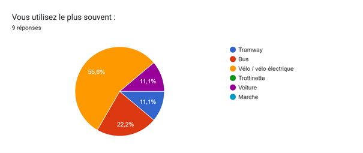
B4. Le prix des transports influence-t-il fortement votre choix ?
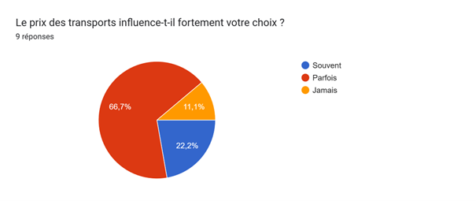
B5. Utilisez-vous les vélos ou trottinettes en libre-service à Nice ?
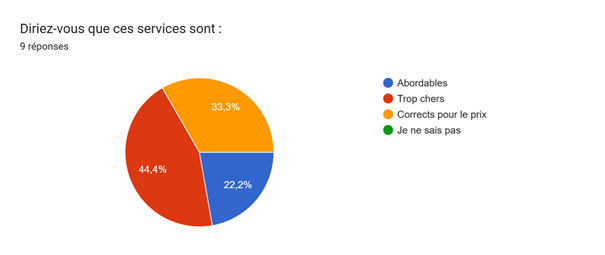
B6. Diriez-vous que ces services sont :
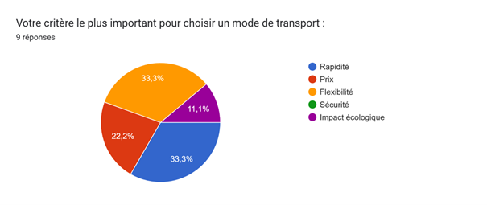
B7. Votre critère le plus important pour choisir un mode de transport : >
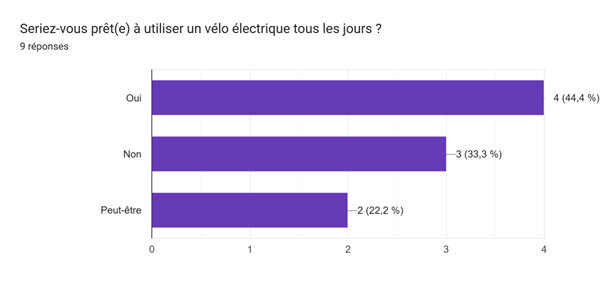
B8. Seriez-vous prêt(e) à utiliser un vélo électrique tous les jours ?
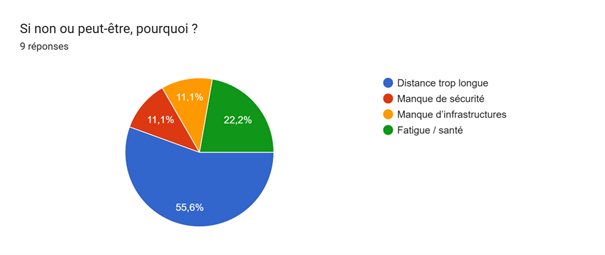
B9. Si non ou peut-être, pourquoi ?
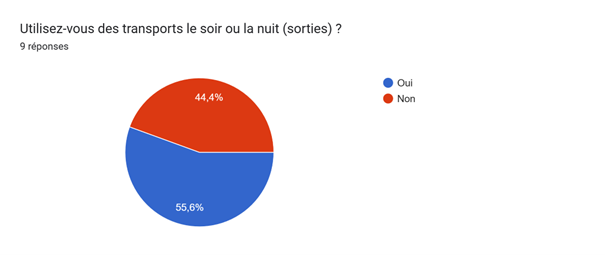
B10. Utilisez-vous des transports le soir ou la nuit (sorties) ?
B11. Pour les sorties, le transport non polluant le plus adapté vous semble :
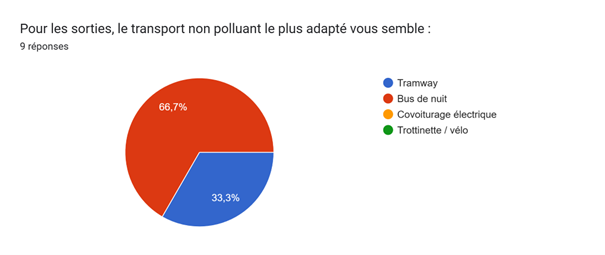
B12. Souhaiteriez-vous plus de transports en commun non polluants la nuit ?
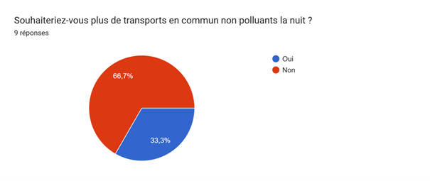
B13. Seriez-vous intéressé(e) par un abonnement “mobilité écologique jeune” ? écologique jeune” ?
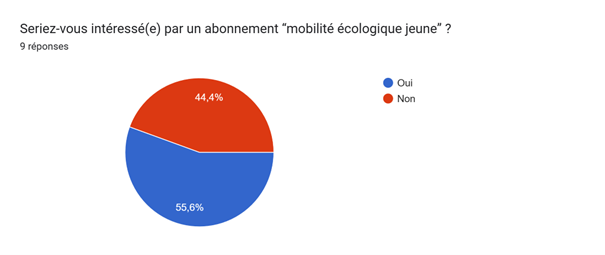
B14. À votre avis, Nice est une ville :
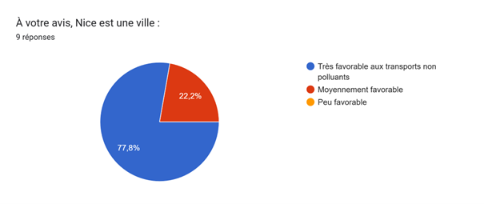
B15. Que manque-t-il le plus pour encourager les jeunes à utiliser des transports non polluants ?
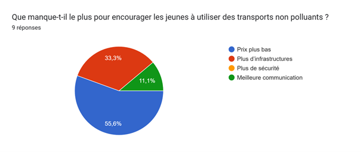
B16. Seriez-vous prêt(e) à laisser la voiture si les transports non polluants étaient plus attractifs ?
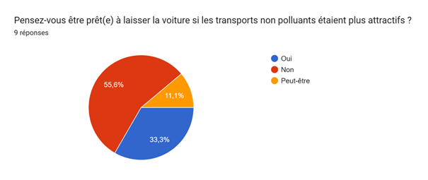
B17. Recommanderiez-vous Nice à d’autres jeunes pour sa mobilité écologique ?
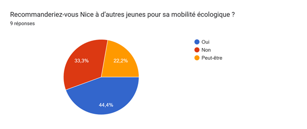
B18. Selon vous, la priorité de la ville devrait être : >
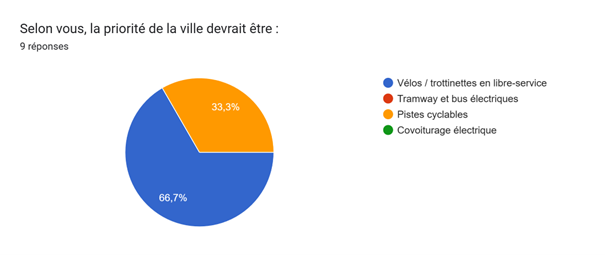